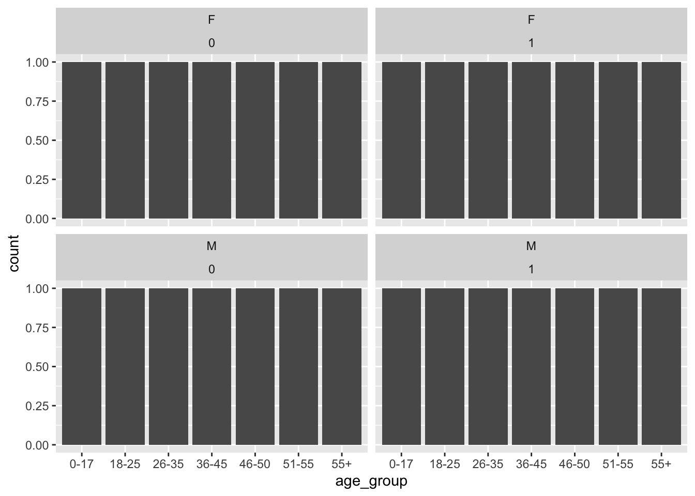
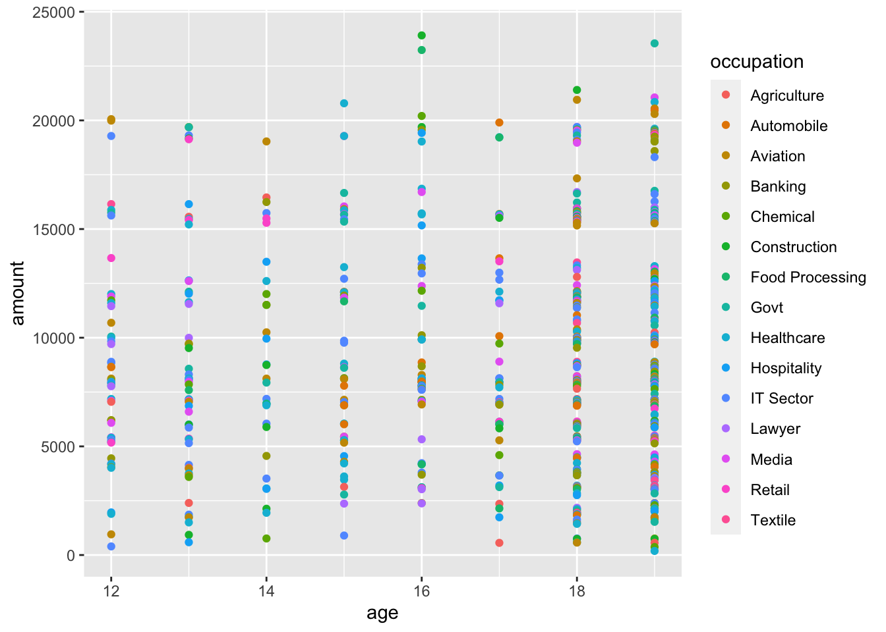
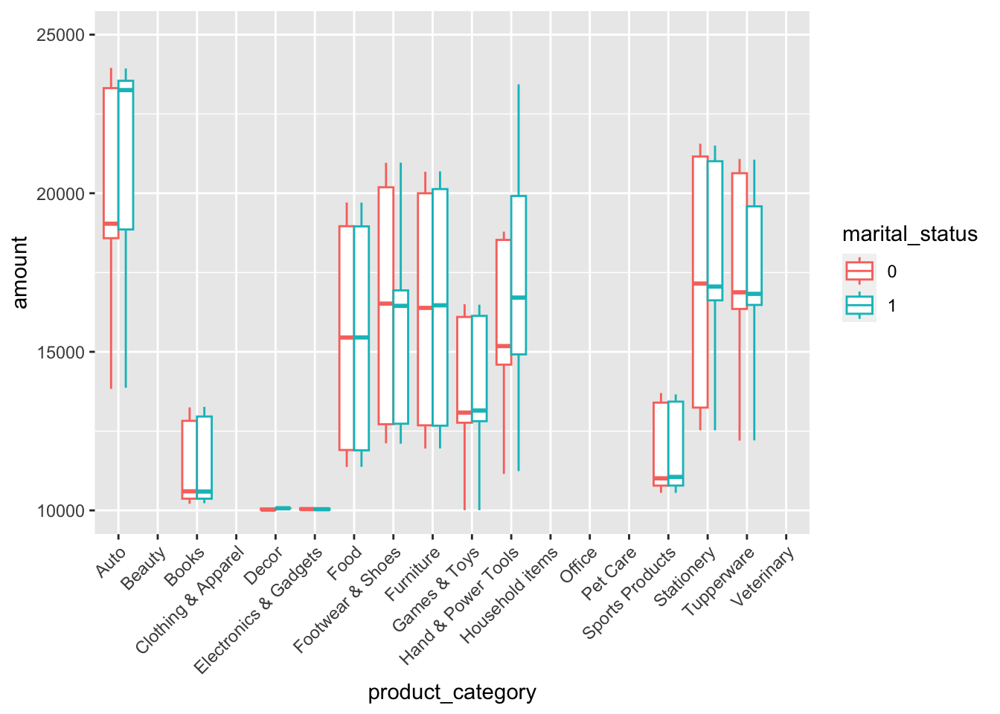
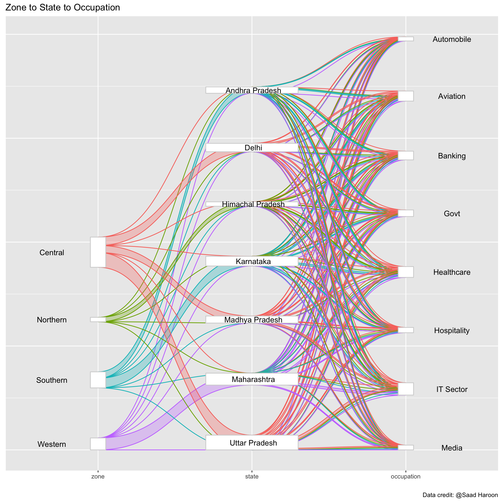

library(tidyverse) # ggplot, lubridate, dplyr, stringr, readr...
library(tidytext)
library(praise)
library(paletteer)
library(ggforce)
library(networkD3)Diwali Sales Data
The Data
The data this week comes from sales data for a retail store during the Diwali festival period in India. The data is shared on Kaggle by Saad Haroon. It isn’t clear how the data were obtained, including the personal characteristics. ???
diwali <- read_csv("diwali_sales_data.csv") |>
janitor::clean_names() |>
mutate(marital_status = as.factor(marital_status))diwali |>
group_by(product_category) |>
summarize(number = n()) |>
arrange(desc(number))# A tibble: 18 × 2
product_category number
<chr> <int>
1 Clothing & Apparel 2655
2 Food 2493
3 Electronics & Gadgets 2087
4 Footwear & Shoes 1064
5 Household items 520
6 Beauty 422
7 Games & Toys 386
8 Sports Products 356
9 Furniture 353
10 Pet Care 212
11 Office 113
12 Stationery 112
13 Books 103
14 Auto 100
15 Decor 96
16 Veterinary 81
17 Tupperware 72
18 Hand & Power Tools 26diwali |>
group_by(age_group,gender, marital_status) |>
summarize(ave_amount = mean(amount, na.rm = TRUE)) |>
ggplot(aes(x = age_group)) +
geom_bar() +
facet_wrap(gender ~ marital_status)
diwali |>
filter(age < 20) |>
ggplot(aes(x = age, y = amount, color = occupation)) +
geom_point()
diwali |>
ggplot(aes(x = product_category, y = amount, color = marital_status)) +
geom_boxplot(position = position_dodge(width = 0.75)) +
theme(axis.text.x = element_text(angle = 45, vjust = 1, hjust=1)) +
ylim(c(10000,25000))
diwali |>
group_by(state) |>
summarize(number = n()) |>
arrange(desc(number))# A tibble: 16 × 2
state number
<chr> <int>
1 Uttar Pradesh 1946
2 Maharashtra 1526
3 Karnataka 1305
4 Delhi 1107
5 Madhya Pradesh 923
6 Andhra Pradesh 812
7 Himachal Pradesh 608
8 Kerala 453
9 Haryana 452
10 Bihar 434
11 Gujarat 429
12 Jharkhand 380
13 Uttarakhand 320
14 Rajasthan 231
15 Punjab 200
16 Telangana 125Making a Sankey plot to identify whether there are occupation trends across different regions. I’m slightly confused about the relationship between zone and state as I would have thought the state would be entirely contained in a particular zone. Regardless, the occupations do not seem to differ across the different states or regions.
diwali_table <- diwali |>
filter(occupation %in% c("IT Sector", "Healthcare", "Aviation", "Banking",
"Govt", "Hospitality", "Media", "Automobile")) |>
filter(state %in% c("Uttar Pradesh", "Maharashtra", "Karnataka", "Delhi",
"Madhya Pradesh", "Andhra Pradesh", "Himachal Pradesh")) |>
select(zone, state, occupation) |>
table()
data <- reshape2::melt(diwali_table)
data <- gather_set_data(data, 1:3) |>
mutate(x = as.factor(x))
data |>
mutate(x = fct_recode(x, "zone" = "1", "state" = "2", "occupation" = "3")) |>
ggplot(aes(x, id = id, split = y, value = value)) +
geom_parallel_sets(aes(color = zone, fill = zone), alpha = 0.3, sep = 0.8) +
geom_parallel_sets_axes(color = "lightgrey", fill = "white",
sep = 0.8,
axis.width = c(rep(0.1, 4), rep(0.6, 7), rep(0.1, 8))) +
geom_parallel_sets_labels(angle = c(rep(0, 4), rep(0, 15)), sep = 0.8,
position = position_nudge(c(rep(-.3, 4), rep(0.01, 7),
rep(.3, 8))),
axis.width = c(rep(0.1, 4), rep(0.6, 7), rep(0.1, 8))) +
theme(legend.position = "none", axis.title.y = element_blank(),
axis.text.y = element_blank(),
axis.ticks.y = element_blank()) +
xlab("") +
labs(title = "Zone to State to Occupation",
caption = "Data credit: @Saad Haroon")
praise()[1] "You are cool!"